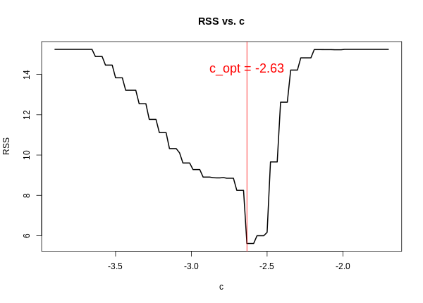

Discontinuous Regression Surface Fitting
Group Project
Statistics Comprehensive
Introduction
- What are we going to do?
-
We have a collection of points in $\mathbb{R}^2$ arranged in a grid inside $[0,1)\times[0,1)$, and also the associated $z$ values for each point. We want to perform “smoothing” for the given data, and predict $z$ value for some point $(x_0,y_0)\in[0,1)\times[0,1)$.
Note that, the underlying function 'may have jumps at some locations, but mostly smooth'. - Why are we interested?
- Not just another new type of regression. It has got many practical applications. For example: (contd.)
-
Image Denoising:
 $\Longrightarrow$
$\Longrightarrow$
-
Working with Elevation data or Temparature Data:


We are going to discuss:
- Defining the problem
- Describing the conventional method
- Description of the proposed method considering jumps
- Results from simulation study
- Concluding remarks
Problem Statement
$$f:[0,1)\times[0,1)\rightarrow\mathbb{R}^2$$ We are given data-points in an $n\times n$ grid: $\{(x_i,y_j)|i,j=1,\ldots,n\}$, where $x_i=y_i=\frac{i-1}{n}$ $$z_{ij}=f(x_i,y_j)+\epsilon_{ij}; \epsilon_{ij}\text{ i.i.d. error}$$ Given $(x_0,y_0)\in[0,1)\times[0,1)$, want to predict $f(x_0,y_0)$Conventional Method : Kernel Smoothing (2-D)
We can do nonparametric regression, with bivariate kernel.
- Any bivariate density function can be used.
- Given any univariate kernel $f(x)$, we can define $K(x,y)=f(x)f(y)$
- For example, univariate triangular kernel is given by, $(1-|x|)I_{\{|x|\leq 1\}}$. So we can define, $K(x,y)=(1-|x|)(1-|y|)I_{\{|x|\leq 1, |y|\leq 1\}}$
Plot of Triangular Kernel
To predict the response variable at $(x_0, y_0)$, we can use Local polynomial smoothing.
For local polynomial of $0$-degree, we minimize,
$$\sum_{i=1}^n\sum_{j=1}^n(z_{ij}-\alpha)^2 K\left(\frac{x_i-x_0}{h},\frac{y_j-y_0}{h}\right)$$
where, $h$ is the smoothing bandwidth.
The estimated value at $(x_0,y_0)$ is given by, $$\hat{f_0}(x_0, y_0)=\hat{\alpha}=\frac{\sum_{i=1}^n\sum_{j=1}^n w_{ij}z_{ij}}{\sum_{i=1}^n\sum_{j=1}^n w_{ij}}$$ where, $w_{ij}=K\left(\frac{x_i-x_0}{h}, \frac{y_j-y_0}{h}\right)$
The estimated value at $(x_0,y_0)$ is given by, $$\hat{f_0}(x_0, y_0)=\hat{\alpha}=\frac{\sum_{i=1}^n\sum_{j=1}^n w_{ij}z_{ij}}{\sum_{i=1}^n\sum_{j=1}^n w_{ij}}$$ where, $w_{ij}=K\left(\frac{x_i-x_0}{h}, \frac{y_j-y_0}{h}\right)$
For local polynomial of $1$-degree, we minimize,
$$\sum_{i=1}^n\sum_{j=1}^n(z_{ij}-\alpha-\beta_1(x_i-x_0)-\beta_2(y_j-y_0))^2 K\left(\frac{x_i-x_0}{h},\frac{y_j-y_0}{h}\right)$$
The estimated value at $(x_0,y_0)$ is given by,
The estimated value at $(x_0,y_0)$ is given by,
$$\hat{f_1}(x_0, y_0)=\hat{\alpha}\text{, where}, [\hat{\alpha}, \hat{\beta_1}, \hat{\beta_2}]^T=\\
\begin{bmatrix}
\sum\sum w_{ij} & \sum\sum w_{ij}(x_i-x_0) & \sum\sum w_{ij}(y_j-y_0)\\
\sum\sum w_{ij}(x_i-x_0) & \sum\sum w_{ij}(x_i-x_0)^2 & \sum\sum w_{ij}(x_i-x_0)(y_j-y_0)\\
\sum\sum w_{ij}(y_j-y_0) & \sum\sum w_{ij}(x_i-x_0)(y_j-y_0) & \sum\sum w_{ij}(y_j-y_0)^2
\end{bmatrix}^{-1}
\begin{bmatrix}
\sum\sum z_{ij}w_{ij}\\
\sum\sum z_{ij}w_{ij}(x_i-x_0)\\
\sum\sum z_{ij}w_{ij}(y_j-y_0)
\end{bmatrix}$$
Example of Kernel Smoothing
Consider the function, $f:[0,1)\times[0,1)\rightarrow \mathbb{R}$
$$f(x, y)=-2(x-0.5)^2 - 2(y-0.5)^2 + I_{\{(x-0.5)^2 + (y-0.5)^2 \leq 0.25^2\}}$$
$f$ was evaluated on a $100\times 100$ grid. Here is the plot of the points and the true surface:
Consider the function, $f:[0,1)\times[0,1)\rightarrow \mathbb{R}$
$$f(x, y)=-2(x-0.5)^2 - 2(y-0.5)^2 + I_{\{(x-0.5)^2 + (y-0.5)^2 \leq 0.25^2\}}$$
$f$ was evaluated on a $100\times 100$ grid, and noises were added from $N(0, \sigma^2)$ with $\sigma=0.3$. Here is the noisy input data:
On the noisy input, we performed the conventional kernel smoothing with triangular density and $h=0.15$
Here is the fitted surface for degree-$0$:
Here is the fitted surface for degree-$0$:
On the noisy input, we performed the conventional kernel smoothing with triangular density and $h=0.15$
Here is the fitted surface for degree-$1$:
Here is the fitted surface for degree-$1$:
Drawbacks : Conventional Kernel Smoothing
The jump imformation was completely lost in the last two outputs. The fitted surface was smooth near the “Jump Location Curve”, but in reality, there is a jump with magnitude $1$ in the true surface.
$$\Bigg\downarrow$$
To overcome the issue, we propose a method where we try to preserve the jump information while doing kernel smoothing.
Proposed Method
- We want to preserve the jump information.
- To estimate $f$ at $(x_0,y_0)$, we shall not consider all points. Instead, we can do a neighbourhood-based clustering.
- For satisfactory performance, we introduce some more assumptions on $f$.
Modified Problem Statement
$$f:[0,1)\times[0,1)\rightarrow\mathbb{R}^2$$
We are given data-points in an $n\times n$ grid: $\{(x_i,y_j)|i,j=1,\ldots,n\}$, where $x_i=y_i=\frac{i-1}{n}$
$$z_{ij}=f(x_i,y_j)+\epsilon_{ij}; \epsilon_{ij}\sim N(0, \sigma^2)\text{ i.i.d., }\sigma^2\text{ unknown.}$$
$f$ has the following properties:
- Except at jump location curves, $f$ is continuous & locally linear(i.e., can be approximated by a plane.)
- The jump location curves are smooth, so that, it can be approximated by a straight line in a small region.
Proposed Method : Step 1
Given $(x_0,y_0)$, first we fix a neighbourhood around this point.
Fix some $l$. Then we have the square neighbourhood, $$S=[x_0-l,x_0+l]\times[y_0-l,y_0+l]$$
Define, $N(x_0, y_0)=$ set of design points contained in $S$.
For $100\times 100$ grid, if $(x_0,y_0)$ is a design point, then $l=0.05\Rightarrow N(x_0,y_0)$ is a set of $121$ points arranged in a $11\times 11$ grid.
We say that, this is a neighbourhood with “window-width $11$”.
Fix some $l$. Then we have the square neighbourhood, $$S=[x_0-l,x_0+l]\times[y_0-l,y_0+l]$$
Define, $N(x_0, y_0)=$ set of design points contained in $S$.
For $100\times 100$ grid, if $(x_0,y_0)$ is a design point, then $l=0.05\Rightarrow N(x_0,y_0)$ is a set of $121$ points arranged in a $11\times 11$ grid.
We say that, this is a neighbourhood with “window-width $11$”.
Proposed Method : Step 1 (contd.)
Example:
Same function $f$, added noise with $\sigma=0.1$
Say, $(x_0,y_0)=(0.32, 0.70)$ and $l=0.06$
So, $N(x_0, y_0)=\{0.26, 0.28, \ldots,0.38\}\times\{0.64,0.66,\ldots,0.76\}$
How does it look like?
Say, $(x_0,y_0)=(0.32, 0.70)$ and $l=0.06$
So, $N(x_0, y_0)=\{0.26, 0.28, \ldots,0.38\}\times\{0.64,0.66,\ldots,0.76\}$
How does it look like?
Proposed Method : Step 2
Fit a least-square plane with the points in $N(x_0,y_0)$, i.e., fit the model,
$$z_{ij}=\alpha+\beta_1 x_i+\beta_2 y_j + \eta_{ij}, \eta_{ij}\text{ i.i.d. error}$$
For our example, we obtained: $\hat{z}=2.9+7.2x-7.3y$ & $RSS=15.242$
Proposed Method : Step 2 (Contd.)
The least square plane is perpendicular to the vector $(\hat{\beta_1}, \hat{\beta_2}, -1)$
Let's draw the normal vector $(7.2, -7.3, -1)$:
Let's draw the normal vector $(7.2, -7.3, -1)$:
Proposed Method : Step 2 (Contd.)
So, $\vec{v_{ij}}=(\hat{\beta_1}, \hat{\beta_2})$ denotes the direction of jump.
Here is the grid with the vector $\vec{v_{ij}}=(7.2, -7.3)$ on $x-y$ plane:
Here is the grid with the vector $\vec{v_{ij}}=(7.2, -7.3)$ on $x-y$ plane:
Proposed Method : Step 2 (Contd.)
The jump location curve can be approximated by a straight line perpendicular to $\vec{v_{ij}}$, i.e., parallel to $(-\hat{\beta_2}, \hat{\beta_1})$.
So, the partitioning line is of the form, $\hat{\beta_1}x+\hat{\beta_2}y=c$, but $c$ is unknown.
Here are 3 parallel lines for $c=$
Here are 3 parallel lines for $c=$
$-2.2,$$-3.0,$$-3.2$
Proposed Method : Step 3
Now we want to find the best $c$. But, how do we define “best” in this context?
- For each $c$, we get one straight line. Therefore, we have a partition of $N(x_0,y_0)$ with 2 disjoint parts.
- In each part, we can fit a least-square plane.
- From these two planes, we can calculate residual sum of squares. Call it $RSS(c)$
- Optimal $c$ is given by, $c_{opt}=\underset{c\in \mathbb{R}}{\operatorname{arg min}}RSS(c)$
Proposed Method : Step 3 (Contd.)
Here is the partition for $c=-3.0$
- $\hat{\beta_1}x+\hat{\beta_2}y\leq c$
- $\hat{\beta_1}x+\hat{\beta_2}y> c$
Proposed Method : Step 3 (Contd.)
Two least square planes:
$RSS(c)=$$0.396$$+$$8.932$$=9.328$
$RSS(c)=$$0.396$$+$$8.932$$=9.328$
Proposed Method : Step 3 (Contd.)
Want to find $c_{opt}$.

$c_{opt}=-2.63$
$c_{opt}=-2.63$
Proposed Method : Step 3 (Contd.)
Optimal partitioning obtained from $\hat{\beta_1}x+\hat{\beta_2}y=c_{opt}$
$RSS(c_{opt})=5.614$
$RSS(c_{opt})=5.614$
Proposed Method : Step 4
We have obtained a partition. But is there really a partition?
- While we fitted a single plane, we obtained one value of $RSS$. Call it $RSS_0$
- For the partitioned fit, we obtained $RSS(c_{opt})$, smaller than $RSS_0$.
- If there really exists a jump in the neighbourhood, then we expect that $RSS_0$ would be significantly higher than $RSS(c_{opt})$. Otherwise, they would be close to each other.
- So we can do a hypothesis testing to determine whether we should trust the obtained partition.
Proposed Method : Step 4 (Contd.)
Hypothesis testing:
$$H_0:\text{Jump location curve passes through the neighbourhood}$$
$$H_A:H_0\text{ is false}$$
In other words, we have the model:
$$z_{ij} = \begin{cases}
\left(p_1+q_1x_i+r_1y_j+\eta_{ij} \right), & \text{if }(x_i,y_j)\in \text{Cluster-1} \\
\left(p_2+q_2x_i+r_2y_j+\eta_{ij} \right), & \text{if }(x_i,y_j)\in \text{Cluster-2}
\end{cases}
$$
and, we want to test,
$$H_0:p_1=p_2,q_1=q_2,r_1=r_2$$
$$H_A:H_0\text{ is false}$$
Proposed Method : Step 4 (Contd.)
Hypothesis testing:
We had assumed that noises follow $N(0,\sigma^2)$
We can do $F\text{-test}$:
$$F=\frac{\left(RSS_0-RSS(c_{opt})\right)/3}{RSS(c_{opt})/(m-6)},m=\#N(x_0,y_0)$$
$$\text{Under }H_0, F\sim F_{3,m-6}$$
Based on level of significance $\alpha$, we can make a decision.
We had, $RSS_0=15.242$, $RSS(c_{opt})=5.614$.
$m=13\times 13=169$. Set $\alpha=0.001$
Hence, $F=93.179$. Therefore, $p\text{-value}=3.63\times 10^{-35}$
Conclusion: There is a jump location curve passing through the neighbourhood. So we shall work with the obtained partition.
We had, $RSS_0=15.242$, $RSS(c_{opt})=5.614$.
$m=13\times 13=169$. Set $\alpha=0.001$
Hence, $F=93.179$. Therefore, $p\text{-value}=3.63\times 10^{-35}$
Conclusion: There is a jump location curve passing through the neighbourhood. So we shall work with the obtained partition.
V Slide 1
$$y=x^2$$
V Slide 2
$$(a+b)^2=a^2+2ab+b^2$$
$$y=x^3$$